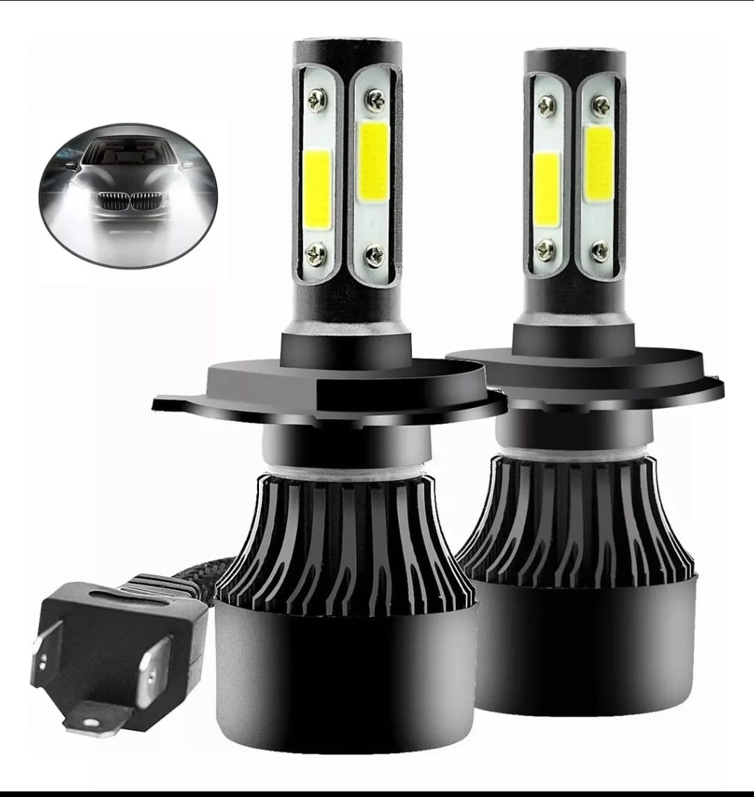

Aquí te mostramos los accesorios más innovadores para personalizar tu motocicleta y mejorar su rendimiento.
| Accesorio |
Descripción |
 |
- Faros LED de última generación.
- Doble función: luz de largo alcance y luz de trabajo.
- Alta potencia para máxima iluminación.
- Resistencia a vibraciones y condiciones extremas.
- Fácil instalación con soportes ajustables.
|
 |
- Luz de freno, direccionales dinámicas y luz trasera.
- Tecnología LED para ahorro de energía.
- Diseño flexible, ideal para motos de todos los tipos.
- Resistente al agua y compatible con diversos modelos.
|
 |
Luz blanca ultrabrillante, perfecta para conducción nocturna.
Consumo eficiente, mayor duración y menor calentamiento.
Carcasa resistente al agua y golpes.
Compatible con la mayoría de modelos.
Fácil instalación con soporte ajustable.
|
 |
Multicolor: Elige entre colores vibrantes como azul, rojo, blanco, morado y más.
Función dinámica: luz fija para circulación y luz secuencial para direccionales.
Flexible y recortable: se adapta a cualquier forma de faro, perfecta para motos deportivas, urbanas o personalizadas.
Resistente al agua: sin miedo a la lluvia o el polvo.
Fácil instalación: compatible con sistemas de 12V.
|
|  |
Focos LED H4 - Alta Potencia y Máxima Visibilidad.
Tipo de conector: H4 (compatible con muchos modelos).
Tecnología: LED de alto brillo.
Voltaje: 12V - 24V (compatibles con sistemas eléctricos).
Temperatura de color: 6000K (Luz blanca fría, ideal para mejorar la visibilidad nocturna).
|
 |
Doble iluminación (Blanco y Amarillo): Ideal para cualquier condición climática.
Lente tipo lupa: Asegura un haz de luz más concentrado y potente.
Material de alta resistencia: Carcasa de aluminio con diseño disipador de calor.
Soporte ajustable: Fácil instalación y adaptación a diferentes ángulos.
Incluye kit de instalación: Tornillos, arandelas y tuercas para un montaje rápido y seguro.
Interruptores incluidos: Controla fácilmente el encendido y cambio de luz.
|
 |
Tipo: Faros LED auxiliares rectangulares.
Cantidad: 2 unidades.
Material: Carcasa de aluminio resistente con disipador de calor.
Color del cuerpo: Negro.
Iluminación: LED de alta potencia con luz blanca brillante.
Modos de luz: Luz de enfoque y luz de dispersión combinadas.
Lente: Acrílico resistente a impactos.
Base de montaje: Ajustable para diferentes ángulos de iluminación.
Incluye: Tornillos, tuercas y soportes para instalación.
|
 |
Luces LED en Forma de Calavera para Motos.
Diseño innovador con forma de calavera para un look llamativo y personalizado.
Iluminación LED de alta potencia con luz blanca y amarilla, ideal para mejorar la visibilidad en carretera.
Fabricadas con materiales de alta calidad y resistencia al agua, perfectas para cualquier clima.
Fácil instalación y compatibilidad con la mayoría de motocicletas.
Incluye interruptor y accesorios de montaje.
|
|
Luces LED con Diseño Futurista para Motos.
Diseño inspirado en máscaras tácticas para un aspecto imponente y moderno.
Iluminación LED de alta potencia con tres modos de luz: blanca, amarilla y combinación de ambas.
Fabricadas con materiales de alta resistencia y protección contra el agua y el polvo.
Incluyen interruptor de encendido y accesorios para una instalación sencilla.
Compatibles con la mayoría de motocicletas y vehículos todoterreno.
|